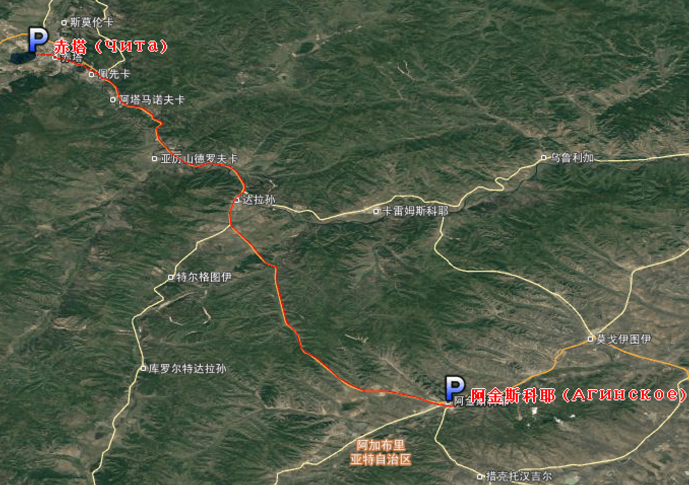
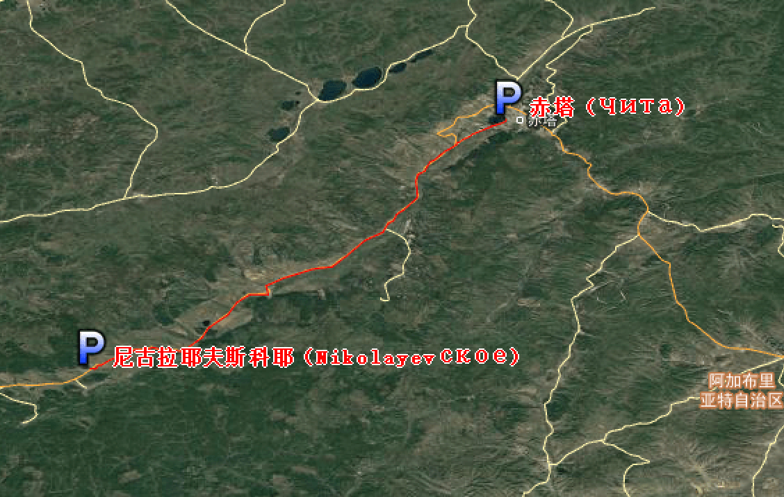
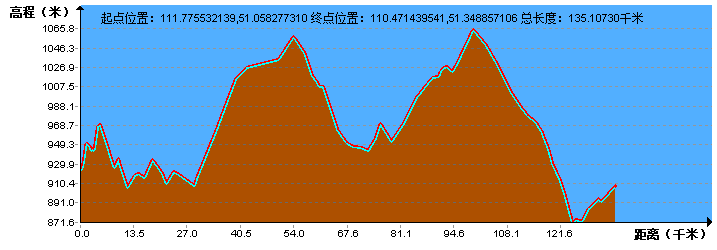

| | | | | |
| - | - | - | - | - |
|<b>中文名称</b>|俄罗斯联邦、俄罗斯||<b>人口密度</b>|8.8人/平方公里（2017年）|
|<b>英文名称</b>|Russian Federation、Russia||<b>主要民族</b>|俄罗斯人|
|<b>简称</b>|俄联邦、俄||<b>主要宗教</b>|东正教|
|<b>所属洲</b>|欧洲||<b>国土面积</b>|1709.82万平方公里|
|<b>首都</b>|莫斯科||<b>水域率</b>|13%（包括沼泽）|
|<b>主要城市</b>|圣彼得堡，叶卡捷琳堡，下诺夫哥罗德，新西伯利亚，喀山，索契等||<b>GDP总计</b>|1.578万亿美元（2017年，国际汇率）|
|<b>国庆日</b>|1990年6月12日||<b>人均GDP</b>|10743美元（2017年，国际汇率）|
|<b>国歌</b>|《俄罗斯，我们神圣的祖国》||<b>国际电话区号</b>|+7|
|<b>国家代码</b>|RUS||<b>国际域名缩写</b>|RU|
|<b>官方语言</b>|俄语||<b>道路通行</b>|靠右驾驶|
|<b>货币</b>|俄罗斯卢布||<b>法律体系</b>|欧陆法系|
|<b>时区</b>|UTC+2至UTC+12||<b>著名高校</b>|莫斯科大学、圣彼得堡大学等|
|<b>政治体制</b>|半总统共和制||<b>国花</b>|向日葵|
|<b>国家领袖</b>|总统：弗拉基米尔·普京；总理：德米特里·梅德韦杰夫||<b>国鸟</b>|铁翅|
|<b>人口数量</b>|1.445亿（2017年）||<b>人类发展指数</b>|0.805（很高）（2014年预计）|
||||<b>基尼系数</b>|0.415|
||||<b>最高点</b>|厄尔布鲁士山（5642米）|
## <i class="fa fa-file-text-o"></i>&nbsp;目录（Table of Contents）
+ [I. 总路线图](#one)
+ [II. 景点（暂无）](#two)
+ [III. 路线规划](#three)
- [1、满洲里 - 博尔贾 （Борзя）](#1)
- [2、博尔贾 （Борзя） - 奥洛维扬纳亚（Оловяннинский）](#2)
- [3、奥洛维扬纳亚（Оловяннинский） - 阿金斯科耶（Агинское）](#3)
- [4、阿金斯科耶（Агинское） - 赤塔（ Чита）](#4)
- [5、赤塔（ Чита） - 尼古拉耶夫斯科耶（Nikolayevское）](#5)
- [6、尼古拉耶夫斯科耶（Nikolayevское） - 希洛克 (Хилок)](#6)
- [7、希洛克 (Хилок) - 塔尔巴哈台（Тарбахарский стол）](#7)
- [8、塔尔巴哈台（Тарбахарский стол） - 扎伊格拉耶沃（заиглаево）](#8)
- [9、扎伊格拉耶沃（заиглаево） - 乌兰乌德（Улан-Удэ）](#9)
- [10、乌兰乌德（Улан-Удэ） - 贝加尔湖（Озеро Байкал）](#10)
- [11、贝加尔湖（Озеро Байкал） - 巴布什金 （Ба?бушкин）](#11)
- [12、巴布什金 （Ба?бушкин） - 色楞杜马（Цветовая дума）](#12)
<h2 id="one"><i class="fa fa-circle-o-notch fa-spin"></i>&nbsp;总路线图</h2>
<img data-src="../imgs/region-line/russia/russia.png" width="80%" height="80%" title="总路线图"/>
<h2 id="two"><i class="fa fa-star-o"></i>&nbsp;景点（暂无）</h2>
<h2 id="three"><i class="fa fa-spinner fa-pulse"></i>&nbsp;路线规划</h2>
<h4 id="1">1、满洲里 - 博尔贾 （Борзя）&nbsp;&nbsp;<i class="fa fa-bicycle fa-2x"></i></h4>
<h4 id="2">2、博尔贾 （Борзя） - 奥洛维扬纳亚（Оловяннинский）&nbsp;&nbsp;<i class="fa fa-bicycle fa-2x"></i></h4>
<h4 id="3">3、奥洛维扬纳亚（Оловяннинский） - 阿金斯科耶（Агинское）&nbsp;&nbsp;<i class="fa fa-bicycle fa-2x"></i></h4>
<h4 id="4">4、阿金斯科耶（Агинское） - 赤塔（ Чита）&nbsp;&nbsp;<i class="fa fa-bicycle fa-2x"></i></h4>

<h4 id="5">5、赤塔（ Чита） - 尼古拉耶夫斯科耶（Nikolayevское）&nbsp;&nbsp;<i class="fa fa-bicycle fa-2x"></i></h4>

<h4 id="6">6、尼古拉耶夫斯科耶（Nikolayevское） - 希洛克 (Хилок)&nbsp;&nbsp;<i class="fa fa-bicycle fa-2x"></i></h4>

<h4 id="7">7、希洛克 (Хилок) - 塔尔巴哈台（Тарбахарский стол）&nbsp;&nbsp;<i class="fa fa-bicycle fa-2x"></i></h4>
<img data-src="../imgs/region-line/russia/7t.png" title="7、希洛克 (Хилок) - 塔尔巴哈台（Тарбахарский стол）"/>
<h4 id="8">8、塔尔巴哈台（Тарбахарский стол） - 扎伊格拉耶沃（заиглаево）&nbsp;&nbsp;<i class="fa fa-bicycle fa-2x"></i></h4>
<h4 id="9">9、扎伊格拉耶沃（заиглаево） - 乌兰乌德（Улан-Удэ）&nbsp;&nbsp;<i class="fa fa-bicycle fa-2x"></i></h4>
<h4 id="10">10、乌兰乌德（Улан-Удэ） - 贝加尔湖（Озеро Байкал）&nbsp;&nbsp;<i class="fa fa-bicycle fa-2x"></i></h4>
<h4 id="11">11、贝加尔湖（Озеро Байкал） - 巴布什金 （Ба?бушкин）&nbsp;&nbsp;<i class="fa fa-bicycle fa-2x"></i></h4>
<h4 id="12">12、巴布什金 （Ба?бушкин） - 色楞杜马（Цветовая дума）&nbsp;&nbsp;<i class="fa fa-bicycle fa-2x"></i></h4>